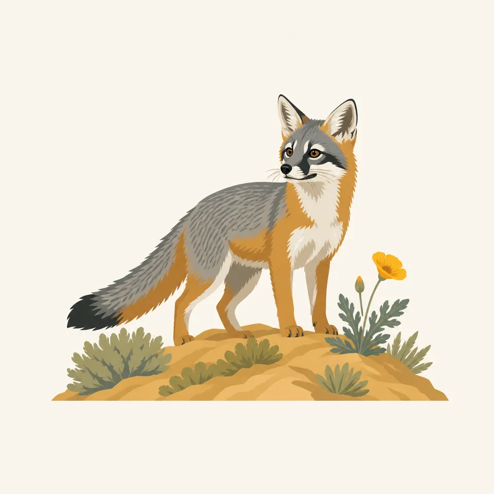
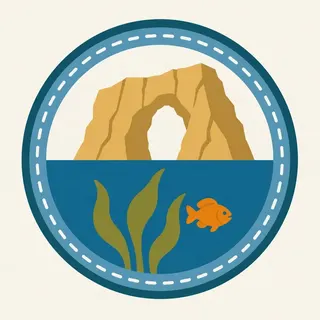

01
Anacapa and Santa Barbara
These two were the 1938 monument, supervised at first from Sequoia, later from Cabrillo, and given their own superintendent in May 1967. The 1949 proclamation put a nautical mile of ocean around them.
TrailMark Archive Edition
California | Santa Barbara Channel
A two-island monument in 1938. Five islands became a national park on March 5, 1980.
Archive No. TM-CHIS-031
National Park since 1980
Collection Five islands
Park Overview
President Jimmy Carter signed Public Law 96-199 on March 5, 1980, establishing Channel Islands National Park.
The park history page quotes the law: it establishes the park to protect the natural, scenic, wildlife, marine, ecological, archeological, cultural, and scientific values of the Channel Islands in California. The new park kept Anacapa and Santa Barbara, the old monument, and added Santa Rosa, Santa Cruz, and San Miguel.
San Miguel stayed under Navy ownership and NPS management. Santa Rosa and Santa Cruz were still private in 1980. The same page says the government bought Santa Rosa from Vail and Vickers in December 1986, bought part of the Gherini land on Santa Cruz in the 1990s, and received 8,500 acres from The Nature Conservancy in 2000, bringing public ownership of Santa Cruz to 24 percent.
Emotional Thesis
Federal interest started in 1932, when the Bureau of Lighthouses offered Santa Barbara and Anacapa. The monument proclamation came on April 26, 1938. The park law came in 1980. The private islands took longer than the law.
The painting puts a sea arch on the right and kelp and a seal below the waterline. Thomas Vint, after a 1946 visit, told the Park Service the monument should extend offshore. Truman's 1949 proclamation did that for Anacapa and Santa Barbara: the water within one nautical mile, 17,635 acres added.
Landscape Highlights
01
These two were the 1938 monument, supervised at first from Sequoia, later from Cabrillo, and given their own superintendent in May 1967. The 1949 proclamation put a nautical mile of ocean around them.
02
They entered the boundary in 1980 and stayed private. Santa Rosa was purchased in December 1986. Santa Cruz reached 24 percent public ownership after the 2000 donation. The history page says those deals put all the park islands in conservation ownership.
03
A 1963 agreement with the Navy protected natural and historic values while keeping military priority. In the 1980 park, San Miguel remained Navy-owned and NPS-managed. It is not the same arrangement as the other four.
Wildlife
The history page protects marine values and records Vint's plea for the underwater life. It does not give this essay a seal or fox census.

01
The extra drawing is a small fox on open island ground. It is not a population figure.
02
The header seal and the kelp are the offshore half that the 1949 proclamation started to protect around two of the islands.
03
Pleistocene elephant fossils are in the 1938 proclamation. They are not living animals. Do not let a painting promote them to the present.
Geology
The monument proclamation names ancient volcanism, deposition, and active sea erosion, plus fossils of elephants and ancient trees.
01
The sea arch in the header is that erosion sentence made visible. It is an illustration, not a named arch from the page.
02
The 1949 boundary is a distance: one nautical mile off Anacapa and Santa Barbara, 17,635 acres of water.
03
A parkwide acreage for 1980 is not copied here. The history page is about which islands and who owned them.
Boats have been the public route since Island Packers started service around 1968. Whether one runs on your day is a current question.
The history page does not give a wind calendar. The channel is the fact. NPS has the conditions.
Around Anacapa and Santa Barbara, the 1949 line is one nautical mile. Know which island you are on before you assume the line.
Santa Rosa's purchase in 1986 and Santa Cruz's later donations are recent. The islands look ancient. The public map is not.
Photography
A dry headland without kelp is missing the reason Truman enlarged the monument.
01
The header arch stands for sea erosion. Do not label it as a specific named feature unless you are standing at one.
02
San Miguel is managed by the park and owned by the Navy. Access is not the same as Anacapa. Read the current rules.
03
Do not turn the extra illustration into a sighting or a count.
Field Notes
The monument was two islands and, after 1949, a mile of water. The park was the patience to add the other three.
TrailMark Field Notes

Badge Story
The mark is an island cliff, an arch, and the waterline. A coastal highway would be the wrong California.
Arch, kelp, and one marine animal.
Five islands can be named in the caption. The picture only needs one cliff.
Do not reuse Acadia's headland light. This coast is offshore.
Archive No.031
LocationFive islands
ReleaseChannel Mark
Stewardship / Safety
The islands took decades to assemble, and parts of Santa Cruz are still not federal. Landing is a privilege the park can limit.
Check which island is open and who runs the boat. Island Packers is historic. It is not a schedule.
San Miguel remains a Navy-owned island under NPS management. Follow the access rules for that island alone.
The 1938 proclamation's fossils and the living kelp are both protected. Do not collect either.
Private conservation land on Santa Cruz is not a default trail. The 24 percent figure is public ownership, not an invitation to the rest.
Current conditions, fees, and alerts are on the National Park Service site.
Continue the Archive
Olympic is rainforest and a mainland coast. American Samoa and Biscayne, in this batch, are the reef parks. These five islands are the kelp channel.